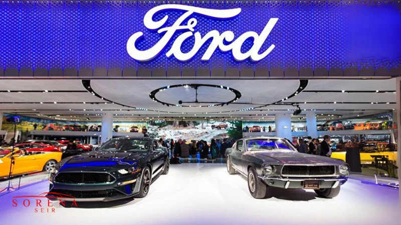

دفتر مرکزی این شرکت که سابقهای بیش از 100 سال در صنعت خودرو دارد؛ در آمریکا واقع شده است. فورد اولین بار خودروهای جذاب طراحی شده توسط هنری فورد را در سال 1903 به بازار عرضه کرده و در حال حاضر 200 هزار کارمند دارد. این شرکت علاوه بر سواری، کامیون و حتی خودروی برقی نیز تولید میکند. فورد از طریق ساختار جدید خود توانسته بالاترین فروش را در ایالات متحده داشته باشد و از این نظر یکی از موفق ترین شرکتهای آمریکایی محسوب میشود. مدلهایی نظیر Focus Electric، Ecosport، Fiesta ، F-150، Fiesta، Expedition و لینکلن نویگیتور از جدیدترین تولیدات این کارخانه هستند. این شرکت با ثبت درآمد 135 میلیارد دلاری سالانه و کسب جوایز متعدد توانسته عنوان یکی از پرفروشترین و خلاقترین شرکتهای جهان را از آن خود کند.
